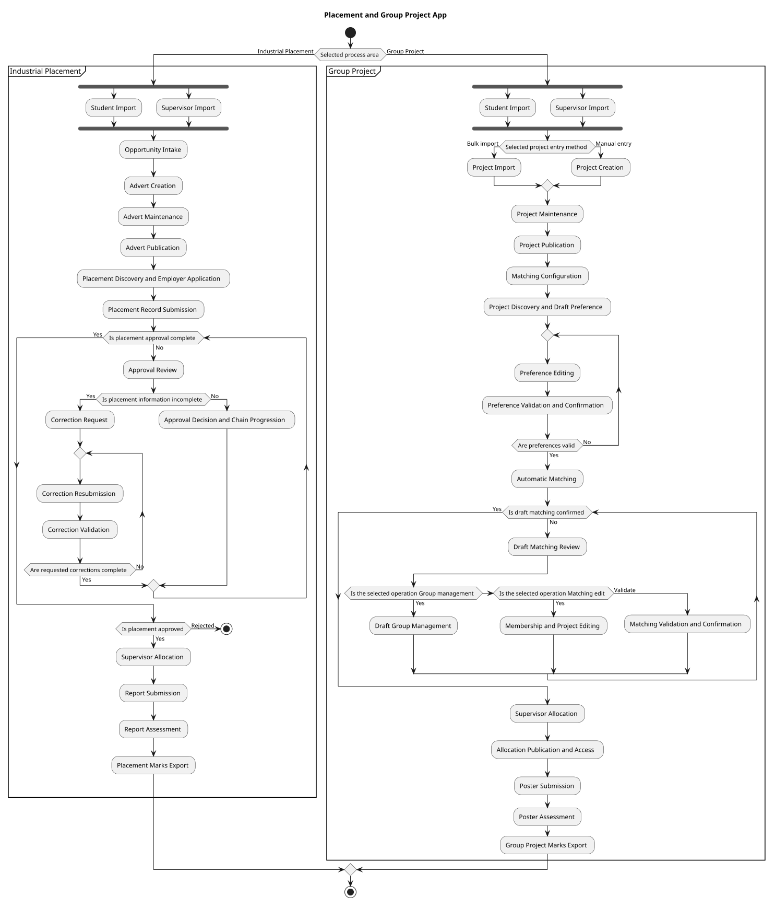

Overview
Default Process Map
How to read each step
Icon shows the interface operation. Colour shows the business effect. Quoted text shows the proposed exact UI label. Terms explain the business wording used in the current diagram.
Interaction
Effect
Terms
Loading diagram…
